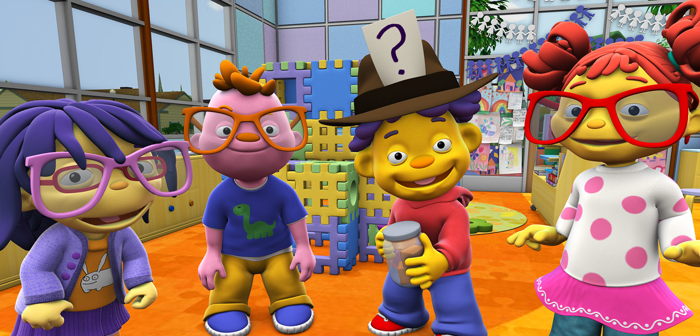
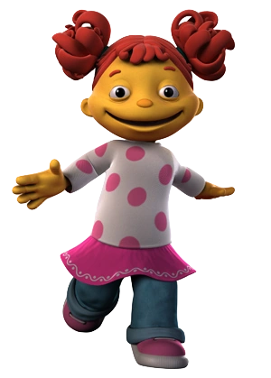
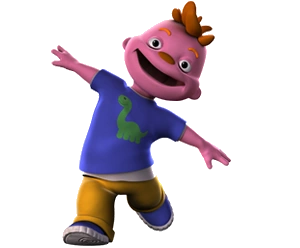
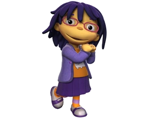
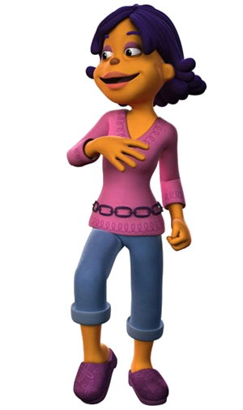
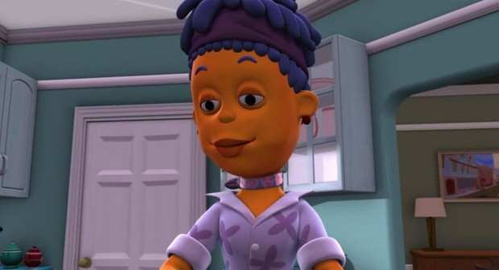
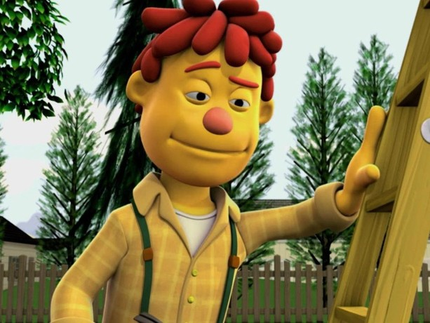

Sid
Um menino curioso de 4 anos que adora fazer perguntas sobre o mundo ao seu redor
'Sid, o Cientista' é uma série de desenho animado infantil que acompanha Sid, um menino curioso de 5 anos que faz perguntas sobre como o mundo funciona.

Um menino curioso de 4 anos que adora fazer perguntas sobre o mundo ao seu redor

Melhor amiga de Sid, é menina inteligente de 4 anos que adora aprender coisas novas

O amigo mais engraçado e agitado da turma. Ele adora contar piadas e fazer os outros rirem

Uma menina mais quieta, tímida, mas muito esperta e observadora.

A professora da escola que ensina ciência de forma divertida com músicas e brincadeiras

A mãe de Sid, que é carinhosa e incentiva o filho a investigar suas dúvidas

O pai de Sid, que é animado e adora brincar com o filho.
O pai de Sid, que é animado e adora brincar com o filho.
O pai de Sid, que é animado e adora brincar com o filho.
O pai de Sid, que é animado e adora brincar com o filho.
O pai de Sid, que é animado e adora brincar com o filho.
O pai de Sid, que é animado e adora brincar com o filho.